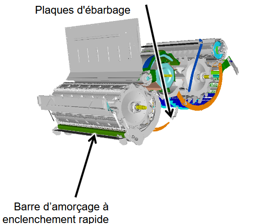
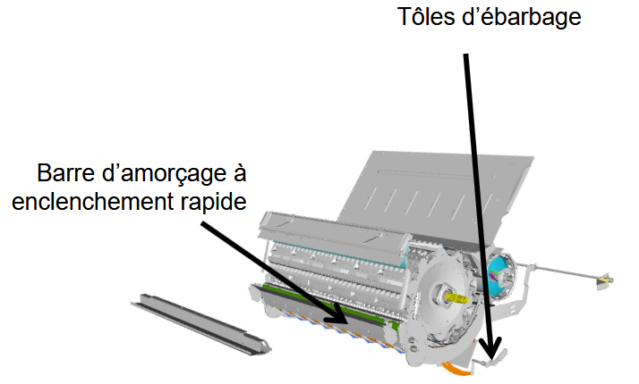

Battage
| Élément | Réglage |
|---|---|
| Plaque d’obturation de la trappe à pierres | Non |
| Barre d’amorçage | Non |
| Contre-batteur | Mixte |
| Plaque d’obturation du batteur | Perforées - nécessaire lorsque des cosses non battues sortent de la moisonneuse-batteuse |
| Tôles d'ébarbage | Non |
| Plage de régime du batteur | Haut/Bas Selon la culture et doit être équipé de batteur à 2 vitesses |
| Culture | Régime du batteur (tr/min) | Écartement du contre-batteur (mm) |
|---|---|---|
| Lupins | 450 – 800 | 15 – 30 |
| Pois | 300 – 450 | 25 – 35 |
| Pois chiches | 450 – 800 | 15 – 30 |
| Soja | 450 – 650 | 20 – 35 |
Série T

Série W
